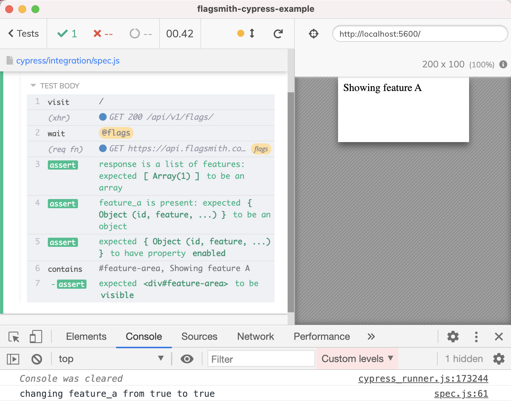

This blog post teaches you how to control the feature flags provided by 3rd party services like Flagsmith, LaunchDarkly, Split, etc during end-to-end tests.
- The loading message
- Test application with Feature A turned OFF
- Test application with Feature A turned ON
- Reusable function
I have created a small project on Flagsmith.com and added a single feature flag "feature_a". At first the flag is turned off.

My web application uses the Flagsmith JavaScript SDK to fetch the flags at runtime. Depending on the feature flag presence, the application renders a different message.
üéÅ You can find the application code and the Cypress tests in the repo bahmutov/flagsmith-cypress-example.
The index.html loads the Flagsmith library and the application code
1 |
|
The application code in app.js inserts an element with the text determined by the feature flag.
1 | // output DIV element |
By default the feature_a is turned off. Thus the application sets the label to "Not showing feature A".
If we flip the feature switch and reload the web page, the feature A will be active and the label changes.
Let's test the web application behavior using Cypress test runner. I want to confirm the following three scenarios:
- the application is showing the loading message while the feature flags are fetched
- the application is working correctly when Feature A is turned OFF during the test
- the application is working correctly when Feature A is turned ON during the test
The loading message
Let's load the page from a Cypress test to see what is going on. I will flip the feature A back to "off" in the Flagmisth project. The test in the spec.js uses the cy.visit command to load the page.
1 | /// <reference types="cypress" /> |
Notice the Command Log showing the Ajax call the Flagsmith SDK is making to its API endpoint to fetch the current flags.
Click on that network call to dump its contents in the DevTools console. The server response has all the feature flags in an array.
In the future tests we can control the response value, but for now let's just slow the network call to make the loading message visible during the test.
1 | it('shows the loading message', () => { |
The test proves the loading message is visible at first, then it goes away.
Tip: read the blog post Be Careful With Negative Assertions for a detailed essay about testing the loading element.
Test application with Feature A turned OFF
Stub the features Ajax call
Let's test how our application behaves without the feature A. We already have the network call response from the Flagsmith API - copy the response object body from the Network tab of the browser's DevTools.
Save the text as a JSON file in cypress/fixtures/no-feature-a.json.
1 | [ |
The test can mock the Ajax call using the above fixture file using the cy.intercept command.
1 | it('does not show feature A', () => { |
Modify the response only
Stubbing the entire Flagsmith call seems excessive. What if there are a lot of features? Do we have to constantly update the fixture file? We are only interested in the feature_a flag. Let's spy on the Ajax call to /api/v1/flags/ and just modify the response to always have the feature_a OFF.
Tip: Cypress bundles Lodash library as Cypress._ so you can use its powerful utility functions from tests.
1 | it('does not show feature A (modify response)', () => { |
The above test uses req.continue((res) => { ... }) callback to inspect the response from the Flagsmith server and modify the feature flag A. By sprinkling a few assertions there we verify that the flag is still present. The console log message shows that even if we toggle the feature flag for the project, the test still overrides it.

Test application with Feature A turned ON
Similar to the previous test, we can verify the application's behavior when the feature A is turned ON.
1 | it('shows the feature A', () => { |

Reusable function
Modifying the feature flags can be abstracted into a utility function. For example, we could specify multiple flags to be overwritten, and the utility function will set up a single network intercept with its logic to find and set each feature flag.
1 | const setFeatureFlags = (flags = {}) => { |
I like add an assertion to verify the function's arguments like this
1 | expect(flags).to.be.an('object').and.not.to.be.empty |
The above assertion is printed to the Command Log allowing the test run video to reflect what feature flags were set during the test.
Happy Feature Flags Testing!